Summary¶
This page contains important and hard-to-remember things from other chapters all in one place to make them easier to find. You can look for stuff you need from this page or you can use it to find something interesting to read.
Note
This page contains summaries, not introductions. I don't expect you to read it and then master everything it's talking about, so also read the human-friendly introductions in other chapters when needed.
Slopes¶
See Also
There isn't a separate chapter about slopes because there isn't much to them, but the derivative chapter contains an introduction.
Notation: if  is first 3 and we change it to 4, the difference of
these values is .
is first 3 and we change it to 4, the difference of
these values is .
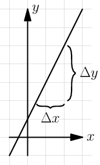
Only straight lines have slopes. The slope of the line in the picture
above is 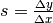, so it determines how much  changes compared to because .
changes compared to because .
Boring detail: vertical lines don't have slopes because the value is
always the same, so regardless of the two points chosen
for calculating 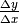 and we get division by zero.
Derivatives¶
Unofficially  is like
is like  , but infinitely small. Use e.g.
, but infinitely small. Use e.g.
 instead of when doing actual
calculations so the "smallness" is explicit and well-defined.
instead of when doing actual
calculations so the "smallness" is explicit and well-defined.
Definition of derivative:
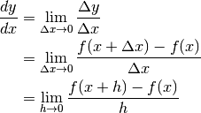
Notation:
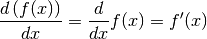
The derivative 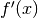 is the slope of a line that just touches  at .
at .
Handy rules:
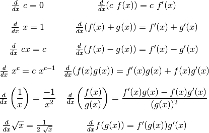
See Also
All of these rules are proved here. I have spent quite a bit of time with creating good but human-readable proofs and you may find them interesting.
Note that if you have something like 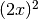 as opposed to  you
need to use the
you
need to use the  rule; that is,
remember to multiply by
rule; that is,
remember to multiply by  . For example:
. For example:
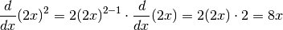
Integrals¶
Area under curve from  to
to  is
is  where
where  is an
antiderivative of
is an
antiderivative of  , i.e. 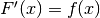.
, i.e. 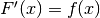.
Notation:
 is the area in the picture.
is the area in the picture. where .
where .- 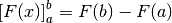.
3D volume  :
:

Geometry and Trig¶
The angle of the green-ish slice at right is 1 radian. The angle of the yellow slice is 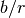 radians.
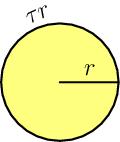A full turn is radians, and a half turn
is  radians. The perimeter of a circle
is
radians. The perimeter of a circle
is  where
where  is the radius.
is the radius.
360 degrees (or 360° for short) is a full turn.
Conversion functions:
const TAU = 2*Math.PI;
function toRadians(degrees) { return degrees/360*TAU; }
function toDegrees(radians) { return radians/TAU*360; }
Unit circle:
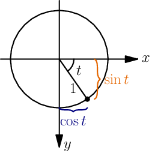
A triangle with a quarter-turn corner and a bunch of math:
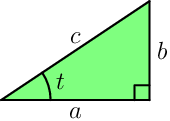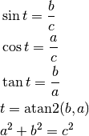
Most programming languages have a hypot(a, b) function that returns
 . You can use it for calculating
. You can use it for calculating  in the above image.
in the above image.